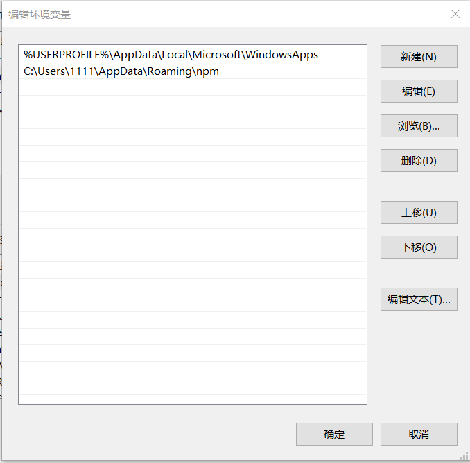
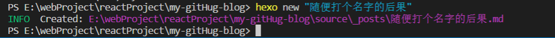

hexo : 无法将“hexo”项识别为 cmdlet、函数、脚本文件或可运行程序的名称。请检查名称的拼写，如果包括路径，请确保路径正确，然后再试一次。
所在位置 行:1 字符: 1
+ hexo
+ ~~~~
+ CategoryInfo : ObjectNotFound: (hexo:String) [], CommandNotFoundException
+ FullyQualifiedErrorId : CommandNotFoundException
今天笔者换新电脑后进行资料迁移以及重新配置一遍工作环境，在迁移完这个博客的工程后，在工程中使用hexo new “name”创建新博客时一直报错，系统找不到指定的命令”hexo”，一般情况下出现这种错误有两种错误，一种是没有进行全局安装，另一种是全局安装目录没有加入系统环境变量PATH中。楼主先是测试第一中情况，执行
npm install -g hexo-cli进行全局安装，再次运行hexo new “name”命令，依然报错，执行npm list –depth=0 -global查看当前已经进行全局安装的模块。
-- hexo-cli@1.1.0可见hexo-cli是存在有的，那么我们看看第二种情况。查案看当前的PATH环境变量

注意PATH中的第二行，这个其实就是npm的全局安装目录，全局变量模块都存于此目录（C:\Users\用户名\AppData\Roaming\npm）下，所以需要在PATH环境变量中加入此目录路径，那么为什么还会报错呢？其实这里用户名是不存在的，昨天笔者拿到新本子开机心切，随便起了个1111的用户名，后来还是觉得太随便太丑了，就强行改了回来，结果在改名之前就已经安装了编辑器并且安装了node，应该就是当时node配置环境变量时使用了当时的1111用户名，所以才会出项这种情况。所以该回来之后，再执行hexo new “name”

OK，大功告成。